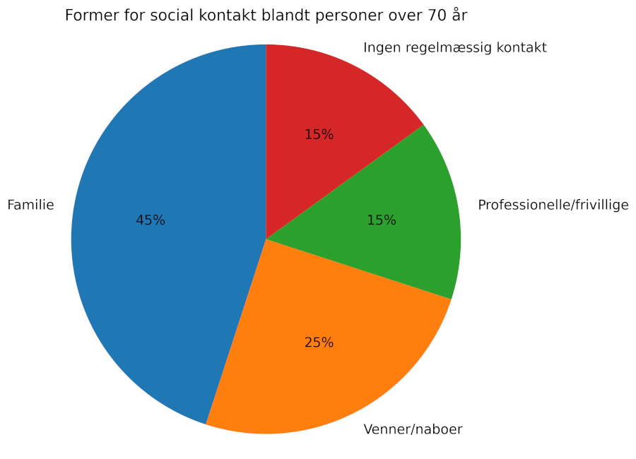
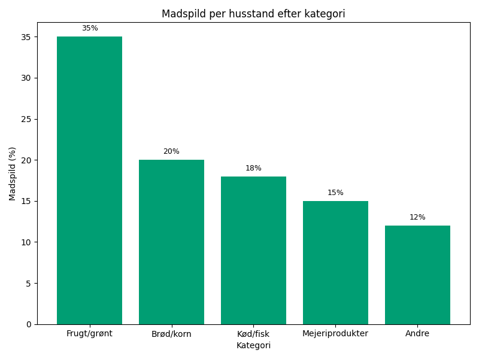
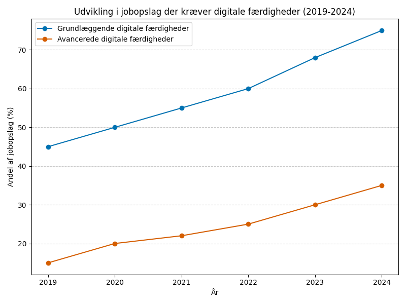

This practice test was generated by Den Frie Prøvebank and is unofficial. Den Frie Prøvebank's ability to validate how well its tests match the official tests, in terms of content and structure, is limited. Users should seek guidance from official teaching institutions as to the structure and content of the exams in question.
Ingen hjælpemidler tilladt
Tekst A: Aldring og pensionssystemet Danmarks befolkning ældnes hurtigere end nogensinde før. I 2024 var 20% af befolkningen over 65 år, og dette tal forventes at stige til 28% inden 2050. Folkepensionsalderen er gradvist hævet til 68 år for at imødegå de økonomiske udfordringer. Arbejdsmarkedspensioner udgør nu 75% af danskernes samlede pensionsopsparing. Staten bruger 180 milliarder kroner årligt på folkepensioner og førtidspensioner.
Tekst B: Fødselstendenser og familiemønstre Danske kvinder får færre børn end tidligere - fertilitetsraten er faldet til 1,7 børn per kvinde. Gennemsnitsalderen for førstegangsfødsler er steget til 29,5 år. 25% af danske børn vokser op i enfamiliehjem. Adoption af udenlandske børn er faldet med 60% siden 2015. Kunstig befrugtning står for 8% af alle fødsler i Danmark.
Tekst C: Migration og integration Danmark modtager årligt omkring 35.000 nye borgere gennem immigration. 15% af befolkningen har indvandrerbaggrund. Beskæftigelsesfrekvensen blandt ikke-vestlige indvandrere er 55%, sammenlignet med 78% for etniske danskere. Sprogkurser i dansk gennemføres af 12.000 personer årligt. Statsborgerskabsprøven består 85% af ansøgerne på første forsøg.
Tekst D: Urbanisering og bosetning 70% af danskerne bor nu i byer med over 10.000 indbyggere. Københavnsområdet vokser med 15.000 nye borgere årligt. 45% af unge mellem 18-30 år flytter til de fem største byer efter gymnasiet. Antallet af landsbyer med under 500 indbyggere er faldet med 30% siden 2000. Kollektiv transport betjener nu kun 40% af Danmarks geografiske areal.
Tekst E: Sociale tendenser og livsstil Antallet af enepersonshusholdninger er steget til 40% af alle danske hjem. Samlevende par uden ægteskab udgør 35% af alle parforhold. Danskerne skifter job i gennemsnit hver 7. år. 32% af befolkningen dyrker regelmæssig motion minimum tre gange ugentligt. Antallet af frivillige i foreninger er faldet med 20% siden 2010.
Sæt bogstavet for den rigtige sætning i hvert felt.
Det danske sundhedssystem står over for alvorlige udfordringer. En aldrende befolkning, stigende behandlingsomkostninger og mangel på sundhedspersonale presser systemet til grænsen.
(1) ________
Hospitalskapaciteten er under konstant pres. Ventelisterne til ikke-akutte operationer er vokset markant, med gennemsnitlige ventetider på 16 uger for hofteoperationer. Mange patienter vælger nu privat behandling for at undgå lange ventetider i det offentlige system.
(2) ________
Rekruttering af sundhedspersonale er blevet kritisk. 25% af sygeplejerskestillinger er ubesatte, og lægemanglen især i yderområderne tvinger mange praktiserende læger til at lukke deres klinikker. Overarbejde og stress har ført til høj udskiftning blandt personalet.
(3) ________
Den teknologiske udvikling tilbyder nye muligheder for behandling, men også højere omkostninger. Avancerede medicinske udstyr og innovative behandlingsmetoder stiller krav om betydelige investeringer, som regionerne kæmper for at finansiere.
(4) ________
Forebyggende sundhedsindsatser har fået øget fokus som en del af løsningen. Kampagner mod rygning, overvægt og inaktivitet sigter mod at reducere presset på behandlingssystemet ved at forebygge livsstilssygdomme før de opstår.
(5) ________
Politiske reformer diskuteres intensivt for at sikre systemets bæredygtighed. Forslag spænder fra øget privatisering til strukturelle ændringer i finansieringen og organisering af sundhedsvæsenet.
Afsnit 1
Demografiske forandringer er hovedårsagen til problemerne. Antallet af ældre over 80 år fordobles de næste 20 år, og denne gruppe har et betydeligt højere forbrug af sundhedsydelser end resten af befolkningen.
Økonomiske begrænsninger påvirker alle aspekter af sundhedsvæsenet. Regionernes budgetter er blevet strammere, mens udgifterne til medicin og behandling stiger hurtigere end inflationen.
International sammenligning viser, at Danmark halter bagefter andre nordiske lande. Sverige og Norge har investeret mere i sundhedsteknologi og har kortere ventetider til behandling.
Afsnit 2
Private hospitaler oplever stor vækst som følge af de offentlige udfordringer. Antallet af private operationer er steget med 40% på fem år, især inden for planlagte indgreb.
Patienternes forventninger er også steget betydeligt. Moderne kommunikationsteknologi gør patienterne mere informerede og krævende overfor behandlingskvalitet og service.
Digitale løsninger implementeres for at optimere arbejdsgangene. Elektroniske patientjournaler og telemedicin kan reducere administration og forbedre koordinationen mellem forskellige behandlere.
Afsnit 3
Uddannelseskapaciteten for sundhedspersonale er utilstrækkelig. Optaget på medicin- og sygeplejerskeuddannelserne dækker ikke det faktiske behov for nye medarbejdere i sektoren.
Arbejdsforholdene i sundhedssektoren afskrækker mange potentielle ansøgte. Lange arbejdstider, høj arbejdsbelastning og relativt lave lønninger sammenlignet med andre højtuddannede erhverv.
Import af udenlandsk sundhedspersonale er blevet en nødvendighed. Især læger og sygeplejersker fra andre EU-lande rekrutteres aktivt for at dække personalemanglen.
Afsnit 4
Forskningsinvesteringer i ny medicin driver omkostningerne op. Kræftbehandling med immunterapi kan koste op til en million kroner per patient, hvilket belaster budgetterne betydeligt.
Patientsikkerhed og kvalitetsstandarder kræver konstant opdatering af udstyr. Gamle røntgenapparater og CT-scannere skal udskiftes med jævnlige mellemrum for at opretholde behandlingskvaliteten.
Robotkirurgi og præcisionsmedicin repræsenterer fremtidens behandling. Disse teknologier lover bedre resultater for patienterne, men kræver massive investeringer i både udstyr og uddannelse.
Afsnit 5
Fremtiden kræver nytænkning af hele sundhedsbegrebet. Fokus skal flyttes fra behandling til forebyggelse, og sundhedssystemet skal integreres bedre med social- og uddannelsessektoren.
Internationale eksempler viser alternative finansieringsmodeller. Nogle lande har implementeret sundhedsforsikringssystemer, der kombinerer offentlig og privat finansiering mere effektivt.
Borgernes eget ansvar for sundheden skal styrkes. Bedre sundhedsundervisning og incitamenter til sunde livsstilsvalg kan reducere behovet for dyr hospitalbehandling.
Kulturlivet i Danmark gennemgår fundamentale forandringer i mødet med digitalisering, globalisering og skiftende samfundsværdier. Traditonelle kulturinstitutioner må genopfinde sig selv, mens nye kulturformer opstår og udfordrer etablerede normer.
Museerne oplever et paradoks: Besøgstallene stagnerer, mens digitale platforme åbner for globale publikummer. Statens Museum for Kunst tiltrækker færre fysiske besøgende, men deres online-samlinger ses af millioner internationalt. Virtual reality-udstillinger og interaktive oplevelser forsøger at gøre museumsbesøg mere attraktive for yngre generationer, der er vant til digital underholdning.
Litteraturen står over for lignende udfordringer. Boghandlerne lukker, og bibliotekerne omformes til multikulturelle mødesteder med cafeer, workshops og digitale services. Lydbøger og e-bøger repræsenterer en stadig større del af det litterære forbrug. Selvudgivelse gennem digitale platforme demokratiserer forfatterskabet, men udfordrer også kvalitetsvurdering og litterære standarder.
Scenekunsten kæmper med økonomiske realiteter. Det Kongelige Teater og andre store institutioner afhænger stadig af betydelige offentlige tilskud, mens mindre teatre og dansekompagnier konkurrerer om begrænsede private fonde. Publikumsudviklingen går mod oplevelsesøkonomi, hvor kulturelle events kombineres med gastronomi og sociale aktiviteter.
Musikbranchen har gennemgået den største transformation. Streaming-tjenester har revolutioneret både distribution og indtjeningsmodeller. Danske kunstnere kan nu nå globale markeder direkte, men konkurrencen er intensiveret. Festivaler som Roskilde og Copenhell tiltrækker internationale stjerner og publikum, men lokale spillesteder lukker på grund af støjregler og ejendomspriser.
Kulturpolitikken balancerer mellem demokratiske idealer og økonomisk effektivitet. Argumentet om kultur som samfundets samlingspunkt konkurrerer med krav om målbar værdi og bredere tilgængelighed. Debatten om kanon og kulturarv versus mangfoldighed og inklusion spejler bredere samfundsdiskussioner om identitet og værdier.
Fremtidens kulturliv vil sandsynligvis være mere fragmenteret og individualiseret. Sociale medier og algoritmer skaber personaliserede kulturoplevelser, men risikerer også at skabe kulturelle bobler. Udfordringen bliver at bevare fælles kulturelle referencer i et samfund, hvor alle kan skabe deres eget kulturelle univers.
Sæt en cirkel om det rigtige svar.
Hvad karakteriserer museumsparadokset ifølge teksten?
Flere internationale, men færre danske besøgende
Stagnerende besøgstal fysisk, men globale online-publikummer
Øget interesse for klassisk kunst, men faldende for moderne
Hvordan omformes bibliotekerne ifølge teksten?
Til rene digitale platforme uden fysiske bøger
Til multikulturelle mødesteder med cafeer og workshops
Til private virksomheder med kommercielle services
Hvad er den største udfordring for mindre teatre og dansekompagnier?
Mangel på kvalificerede kunstnere
Konkurrence om begrænsede private fonde
Faldende interesse for scenekunst blandt publikum
Hvordan har streaming-tjenester påvirket musikbranchen?
De har øget indtægterne for alle musikere betydeligt
De har kun gavnet internationale kunstnere
De har revolutioneret distribution og indtjeningsmodeller
Hvad vil sandsynligvis karakterisere fremtidens kulturliv?
Mere centraliseret og standardiseret
Mere fragmenteret og individualiseret
Mindre påvirket af teknologi og sociale medier
Danmark (1) ______ sig som en lille, åben økonomi, der er stærkt afhængig af international handel. Landets (2) ______ geografiske position har historisk gjort det til et naturligt transitland mellem kontinentaleuropa og Skandinavien.
Eksport (3) ______ for næsten halvdelen af Danmarks bruttonationalprodukt, hvilket gør landet særligt (4) ______ over for globale økonomiske udsving. De største eksportmarkeder er Tyskland, Sverige og Norge, som tilsammen (5) ______ over 40% af den samlede danske eksport.
Industrielle produkter (6) ______ den største del af eksporten, især maskiner, medicinalindustri og fødevarer. Danske virksomheder som Maersk, Novo Nordisk og Carlsberg har (7) ______ globale markedsførere inden for deres respektive sektorer og bidrager betydeligt til landets eksportindtægter.
Handelsbalancen har været (8) ______ positive for Danmark gennem mange år. Dette skyldes ikke kun stærke eksportvirksomheder, men også (9) ______ importpolitik og fokus på højværdi-produkter frem for råmaterialer.
Fremtidige udfordringer (10) ______ handelskrige, klimakrav til transport og øget konkurrence fra emerging markets, hvilket kræver konstant innovation og tilpasning fra danske virksomheder.
| 2 | a. centrale | b. strategiske | c. maritime | d. nordlige |
| 3 | a. står | b. udgør | c. repræsenterer | d. betyder |
| 4 | a. sårbar | b. påvirket | c. følsom | d. udsat |
| 5 | a. udgør | b. repræsenterer | c. modtager | d. absorberer |
| 6 | a. dominerer | b. udgør | c. repræsenterer | d. charakteriserer |
| 7 | a. udviklet | b. etableret | c. skabt | d. blevet |
| 8 | a. generelt | b. overvejende | c. hovedsageligt | d. typisk |
| 9 | a. selektiv | b. restriktiv | c. strategisk | d. bevidst |
| 10 | a. omfatter | b. inkluderer | c. indebærer | d. involverer |
Alle ordbøger er tilladt
Grafik:
Manchet: Ensamhed blandt ældre danskere er blevet et voksende samfundsproblem. Mange ældre føler sig isolerede og savner meningsfulde sociale forbindelser, hvilket påvirker både deres fysiske og mentale sundhed negativt.
Opgave: Skriv en sammenhængende tekst på minimum 400 ord, hvor du:
Grafik:

Manchet: Danske husholdninger smider årligt 700.000 tons mad ud. Dette madspild belaster både familieøkonomien og miljøet, da produktion af mad, der aldrig spises, skaber unødvendige CO2-udslip og ressourceforbrug.
Opgave: Skriv en sammenhængende tekst på minimum 400 ord, hvor du:
Grafik:

Manchet: Det danske arbejdsmarked stiller stigende krav til digitale kompetencer. Både grundlæggende og avancerede IT-færdigheder er blevet afgørende for jobmuligheder på tværs af brancher, hvilket skaber nye udfordringer for arbejdssøgende og uddannelsessystemet.
Opgave: Skriv en sammenhængende tekst på minimum 400 ord, hvor du:
Brug disse sider til at skrive din skriftlige opgave.
Stikord til inspiration:
Stikord til inspiration:
Stikord til inspiration:
This practice test was generated by Den Frie Prøvebank and is unofficial. Den Frie Prøvebank's ability to validate how well its tests match the official tests, in terms of content and structure, is limited. Users should seek guidance from official teaching institutions as to the structure and content of the exams in question.